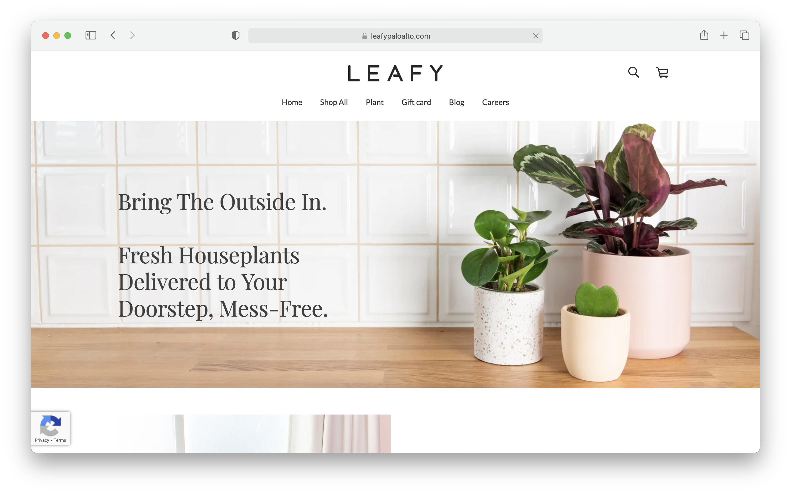
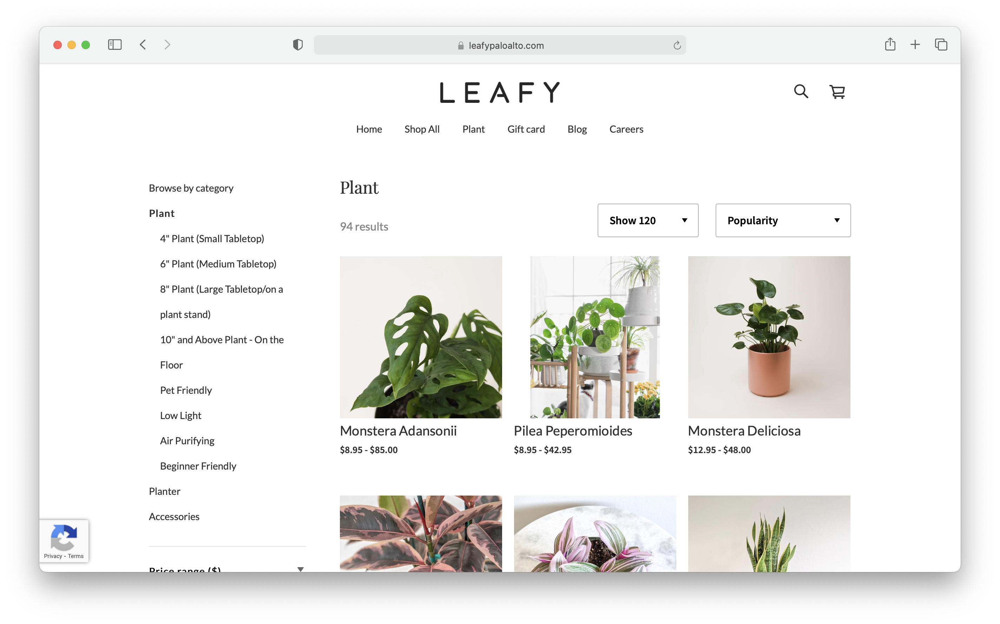
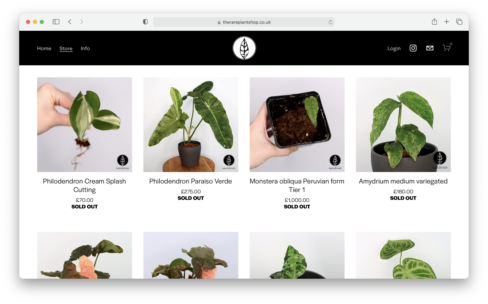
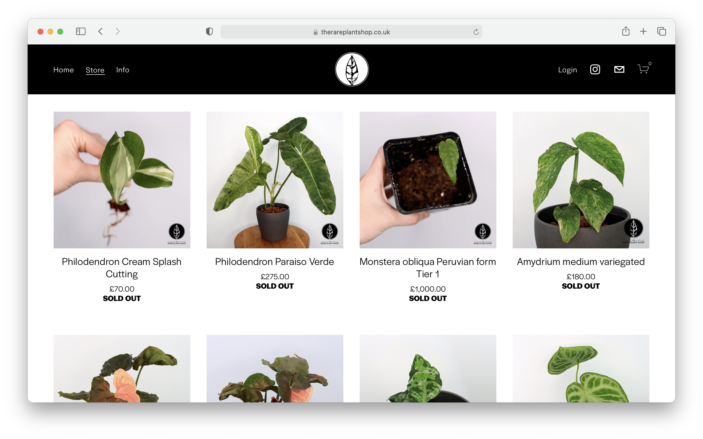
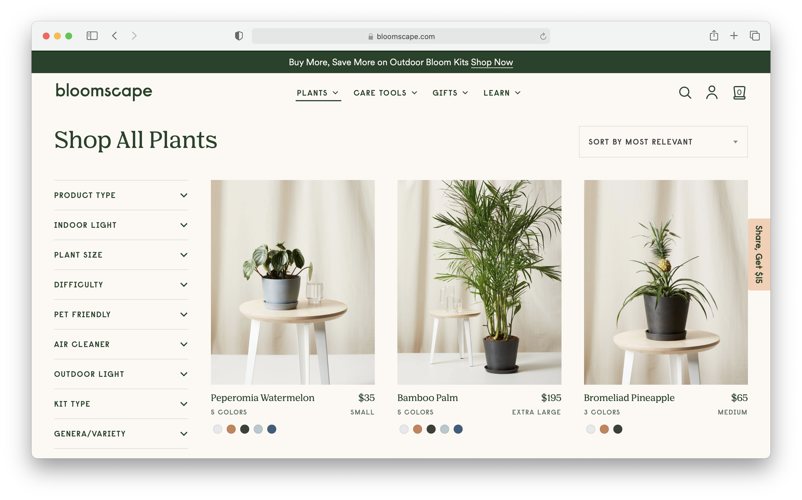
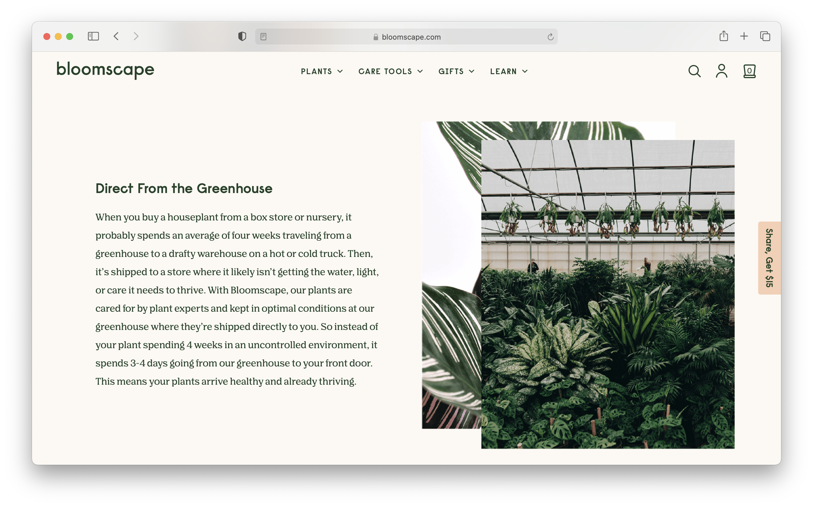

Final project proposal
Introduction
The Greenery
At The Greenery, we believe everyone should bring a little green into their life. We make buying plants easy by offering a variety of plant selections that suits all types of lifestyles, people, and settings. Whether you are a beginner or plant expert, we’ve got the perfect plant for you!
Target audience
The people who use this site are either beginners who are interested in integrating plants into their life or plant experts who are interested in discovering new and unique plants.
For plant beginners, their task is to find an easy and low maintenance plant that suits their lifestyle to get them started on their plant journey. For plant experts, their goal is to find a new and unique plant to add to their plant collection.
Comparative analysis
Leafy Palo Alto
 The Rare Plant Shop
 

Bloomscape
 Website content
Home
Bring a little green into your life! At The Greenery, we make buying plants easy. We offer a variety of plants that cater to all people, lifestyles, and settings. Whether you are a beginner or plant expert, we have the perfect plant for you.
[The inside corner of the shop that is displaying a variety of available plants for sell on wooden shelves and chairs.]
About Us
With life having transitioned to being at home most of the time, our founders longed to bring a little bit of the outdoors into their home. At first, the idea of successfully taking care of a plant seemed intimidating and difficult. However, after finding a low-maintenance and easy plant to take care of, our founders developed a passion for plants. This led our founders to create The Greenery to encourage people to bring a little green into their home by offering a variety of plants that cater to beginners or experts.
[A living room and office space that is decorated with a variety of plants.]
Shop
Our shop offers a variety of plants ranging from easy indoor plants, pet-friendly plants, plant decor, and plant care tools.
[A row of different potted plants on top of a wooden table.]
Easy Indoor Plants
-
Philodendron Lemon Lime
Beautiful and bright Philodendron with chartreuse foliage.
$35
-
Sansevieria Moonshine
A rare and stunning statement plant with stunning blue-silver leaves.
$65
-
Monstera
Lively and wild with large, tropical leaves. Also known as the Swiss Cheese Plant.
$150
-
Zenzi Plant
Incredibly easy-care plant with dense, emerald leaves.
$65
-
Alocasia Polly
Glossy, dark leaves with silvery-green veining.
$65
-
Philodendron Brasil
Lively and trailing with variegated, heart-shaped leaves.
$65
Pet-Friendly Plants
-
Peperomia Watermelon
Luxurious and striking with dark green, patterned leaves.
$65
-
Calathea Medallion
Compact peperomia with oval-shaped, silvery dark-green striped foliage and red stems. This plant resembles the watermelon fruit inside and out.
$35
-
Spider Plant
Fun and whimsical with long, curved leaves with white striping.
$35
-
Bird's Nest Fern
Lush and tropical with bright, crinkled leaves.
$35
-
Calathea Peacock
Elegant and expressive with light and dark green patterned leaves.
$65
-
Fishbone Cactus
Easy-going vining cactus with zig-zag shaped leaves.
$65
Plant Decor
-
Chinese Fan Palm
Tropical palm with large, fanning leaves.
$195
-
Bird of Paradise
CImpressive and tropical with large, glossy leaves that naturally split over time.
$150
-
Staggered Yucca Cane
Low maintenance with sword-like green leaves atop three sturdy canes.
$195
-
ZZ Plant
Hardy and graceful with layered leaves. This plant is tough, beautiful, and nearly indestructible.
$150
-
Dracaena Gold Star
Whimsical and low-maintenance, with long, dark green and chartreuse striped leaves atop sturdy canes.
$195
-
Schefflera Arboricola
Fun and easy houseplant, with dramatic umbrella-shaped leaf formations and braided trunk.
$195
Plant Care Tools
-
Large Watering Can
Stylish watering can perfect for watering large and extra-large plants.
$28
-
Soil Scoop
Stainless steel soil scoop for repotting and planting.
$30
-
Gardening Staples Kit
Gardener Staples Tool Kit, complete with large Ecopot and saucer, stainless steel soil scoop and houseplant pruning shears.
$85
-
Plant Snips
Precision houseplant snips for trimming, pruning, and harvesting.
$25
-
Plant Pruner
Stainless steel houseplant pruner for cutting large stems and tough branches.
$25
-
Potting Soil
Our signature potting soil for indoor and outdoor plant care.
$20
Contact
If you have any questions or feedback, please do not hesitate to contact us.
(650) 215-6754
thegreenery@gmail.com
Location
3236 21st Street, San Francisco, CA 94110
[The interior of the plant shop. The interior is displaying a variety of potted plants and flowers on wooden furniture.]
Hours
Sunday to Monday: 9 AM to 6 PM